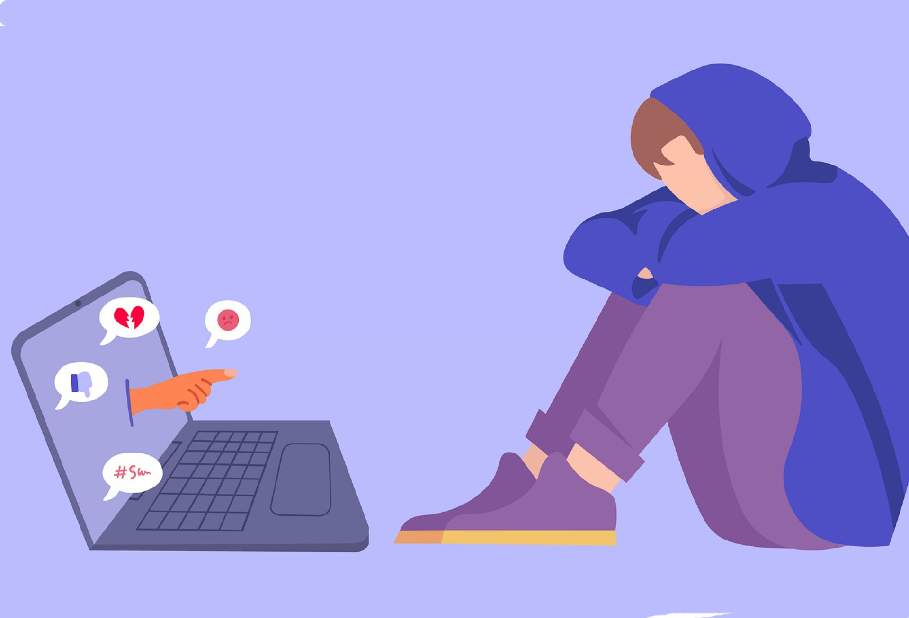

Seguridad en Redes Sociales
1- Ciberacoso:

El ciberacoso es una forma de acoso que ocurre en el entorno digital, específicamente a través de las redes sociales y otras plataformas en línea. Consiste en el uso de tecnología y medios digitales para intimidar, amenazar, difamar, humillar o acosar a otras personas. Esta forma de acoso puede tener un impacto
significativo en la salud mental y emocional de las personas afectadas. El ciberacoso puede manifestarse de diversas maneras, como el envío de mensajes ofensivos o amenazantes, la difusión de rumores falsos, la creación de perfiles falsos para acosar a alguien, la divulgación no consensuada de información privada o íntima, el acoso
en grupos en línea, entre otros Las consecuencias del ciberacoso pueden ser graves y duraderas. Las personas que son víctimas de ciberacoso pueden experimentar altos niveles de estrés, ansiedad, depresión e incluso pensamientos suicidas. Además, el ciberacoso puede afectar negativamente la autoestima, la confianza en uno mismo y las
relaciones sociales de las personas afectadas. Es importante tomar medidas para prevenir y abordar el ciberacoso. Esto implica educar a las personas sobre el uso responsable de la tecnología, fomentar un ambiente en línea seguro y respetuoso, denunciar el acoso a las autoridades competentes y brindar apoyo y recursos a las víctimas.
2- Suplantación de identidad:

La suplantación de identidad es una forma de fraude en la que los estafadores utilizan la información que encuentran en las redes sociales para hacerse pasar por otra persona. Esto les permite cometer actividades delictivas, como el robo de información personal, el fraude financiero o el acoso en líneas
Los estafadores pueden obtener información personal de las redes sociales, como nombres, fotos, lugares de trabajo, relaciones y otros detalles, para crear perfiles falsos y engañar a las personas. Pueden enviar solicitudes de amistad o mensajes a personas desconocidas, haciéndose pasar por alguien de confianza, con el objetivo de obtener
información confidencial o manipular a sus víctimas para que realicen acciones perjudiciales.
Es importante ser cauteloso al aceptar solicitudes de amistad o al interactuar con personas desconocidas en línea. Verificar la autenticidad de los perfiles y tener cuidado al compartir información personal sensible son medidas clave para protegerse contra la suplantación de identidad. Además, es recomendable utilizar configuraciones de
privacidad adecuadas en las redes sociales para limitar la visibilidad de la información personal.
3- Phishing y malware:

El phishing y el malware son dos riesgos comunes asociados al uso de las redes sociales. Los ciberdelincuentes pueden aprovechar estas plataformas para enviar enlaces maliciosos o archivos infectados con el objetivo de comprometer la seguridad de los dispositivos y robar información personal.
El phishing es una técnica de ingeniería social en la que los estafadores se hacen pasar por entidades o individuos de confianza , como bancos, empresas o servicios en línea, con el fin de engañar a las personas y obtener información confidencial, como contraseñas, datos financieros o personales. Estos estafadores
pueden enviar mensajes o publicaciones falsas que contienen enlaces que redirigen a sitios web fraudulentos diseñados para robar información.
El malware, por otro lado, se refiere a software malicioso diseñado para dañar o comprometer los dispositivos y la información almacenada en ellos. Los ciberdelincuentes pueden utilizar las redes sociales para distribuir malware a través de enlaces o archivos adjuntos infectados. Una vez que el malware se instala en un dispositivo,
puede realizar diversas acciones dañinas, como robar información personal, controlar el dispositivo de forma remota o incluso bloquearlo hasta que se pague un rescate.
4- Exposición a contenido inapropiado:

La exposición a contenido inapropiado es otro riesgo asociado al uso de las redes sociales. Estas plataformas pueden contener contenido que incluye violencia, pornografía, discursos de odio y otros materiales inapropiados. Esta exposición puede ser especialmente perjudicial para los niños y adolescentes, ya que pueden
ser más vulnerables e influenciables. Es importante supervisar y controlar el acceso a las redes sociales, especialmente para los más jóvenes. Esto puede incluir establecer límites de tiempo para el uso de las redes sociales, utilizar filtros de contenido y tener conversaciones abiertas y honestas sobre los riesgos asociados a la exposición
a contenido inapropiado. También es recomendable enseñar a los niños y adolescentes a reconocer y reportar contenido inapropiado, y fomentar un ambiente de confianza para que puedan hablar sobre cualquier experiencia negativa que hayan tenido en las redes sociales. Además, es importante que los adultos también sean conscientes de su propia
exposición a contenido inapropiado y tomen medidas para protegerse a sí mismos. Esto puede incluir ajustar la configuración de privacidad en las redes sociales, bloquear o denunciar contenido ofensivo y ser selectivo al aceptar solicitudes de amistad o seguir a personas en línea.
Consejos de Seguridad en Redes Sociales
Existen diferentes medidas para protegerse de los peligros de las redes sociales como las siguientes:
- Utilizar una contraseña robusta : De este modo es posible prevenir que algún atacante descubra
fácilmente nuestra contraseña. Es importante mencionar que la contraseña es la llave para acceder
a nuestro perfil de redes sociales de modo que si un atacante lograra descubrirla podría secuestrar
la cuenta y nuestros contenidos.
- Ser precavido en la información publicada y permitir que sólo los contactos de nuestra red de
amigos puedan ver esos datos: Al momento de publicar se debe tener cuidado de no dar información
confidencial como números de cuenta, contraseñas, número de teléfonos o direcciones pues si algún
usuario desconocido tuviera acceso a esta información podría terminar en casos de acoso o publicidad.
- No aceptar contactos desconocidos: Aceptar contactos desconocidos incrementa las posibilidades
de recibir mensajes spam o mensajes con ligas a sitios fraudulentos o con contenido maliciosol.
- Reportar cualquier caso de spam o abuso: Es importante reportar los mensajes spam a nuestro proveedor
de redes sociales pues esto ayudará a prevenir que se sigan multiplicando estos ataques utilizando una misma cuenta.
- No almacenar contraseñas de acceso en equipos compartidos.
- Cerrar la sesión cuando se termine de utilizar el servicio.